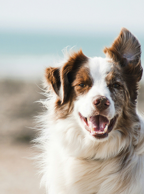

팝업
찾습니다
가족을 찾습니다.
-
 실종
실종코리아 쇼트 헤어
- 실종장소 인천광역시 서구 신현동 대성베르힐아파트 근처 공원
- 실종날짜 2025-03-23
- 특이사항 왼쪽 아래 송곳니 부러짐
-
종료
골든 리트리버
- 실종장소 경기도 남양주시 장현천로135-11리치타운 근방
- 실종날짜 2025-5-16
- 특이사항 사람을 잘따르고 애교가 많습니다. 혹시나 보신분은 연락한번만 해주세요 ㅠㅠ
-
실종
보더콜리
- 실종장소 경기도 화성시 오후2시15분 경기 화성시 남양읍 무하로 115-9
- 실종날짜 2025-4-28
- 특이사항 겁이 많아요
-
실종
러시안 블루
- 실종장소 대구광역시 중구 국채보상공원GS25시 근처
- 실종날짜 2025-05-19
- 특이사항 구조묘인데 어릴때 영양이 부족해서인지 꼬리가 지그재그모양으로 생겼고 가슴부위(앞다리사이)에 흰털이 조금 있습니다. 사람에겐 친근히 다가가고 차량이나 오트바이를 무서워합니다.
주인을 찾습니다.
-
 목격
목격코리아 쇼트 헤어
- 실종장소 인천광역시 서구 신현동 대성베르힐아파트 근처 공원
- 실종날짜 2025-03-23
- 특이사항 왼쪽 아래 송곳니 부러짐
-
 종료
종료골든 리트리버
- 실종장소 경기도 남양주시 장현천로135-11리치타운 근방
- 실종날짜 2025-5-16
- 특이사항 사람을 잘따르고 애교가 많습니다. 혹시나 보신분은 연락한번만 해주세요 ㅠㅠ
-
구조
보더콜리
- 실종장소 경기도 화성시 오후2시15분 경기 화성시 남양읍 무하로 115-9
- 실종날짜 2025-4-28
- 특이사항 겁이 많아요
-
목격
러시안 블루
- 실종장소 대구광역시 중구 국채보상공원GS25시 근처
- 실종날짜 2025-05-19
- 특이사항 구조묘인데 어릴때 영양이 부족해서인지 꼬리가 지그재그모양으로 생겼고 가슴부위(앞다리사이)에 흰털이 조금 있습니다. 사람에겐 친근히 다가가고 차량이나 오트바이를 무서워합니다.
구조동물 발견 시 대처요령
공공장소!에서 주인 없이 떠도는
동물!을 발견한 경우
관할 시군구청 또는 동물보호센터!에
신고!하시길 바랍니다.
소유자를 알 수 없는 동물을 신고하지 않고 포획하여 죽이는 경우 동물보호법
제10조제3항제2호를 위반하여 3년 이하 징역이나 3천만원 이하 벌금이 부과됩니다.
가족이 되어주세요
DON'T BUY A PET, ADOTP ONE DON'T BUY A PET, ADOTP ONE DON'T BUY A PET, ADOTP ONE DON'T BUY A PET, ADOTP ONE